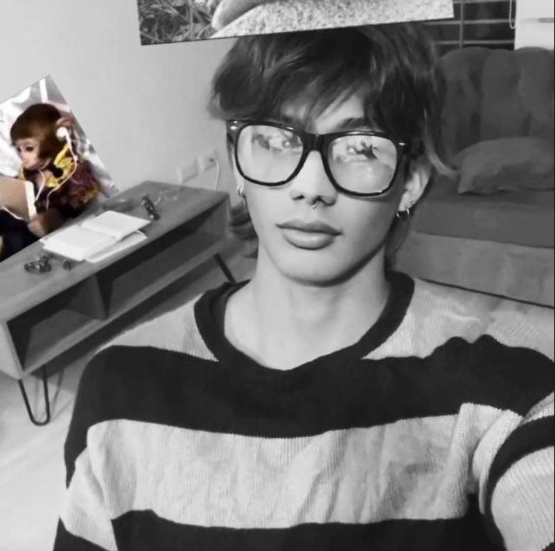
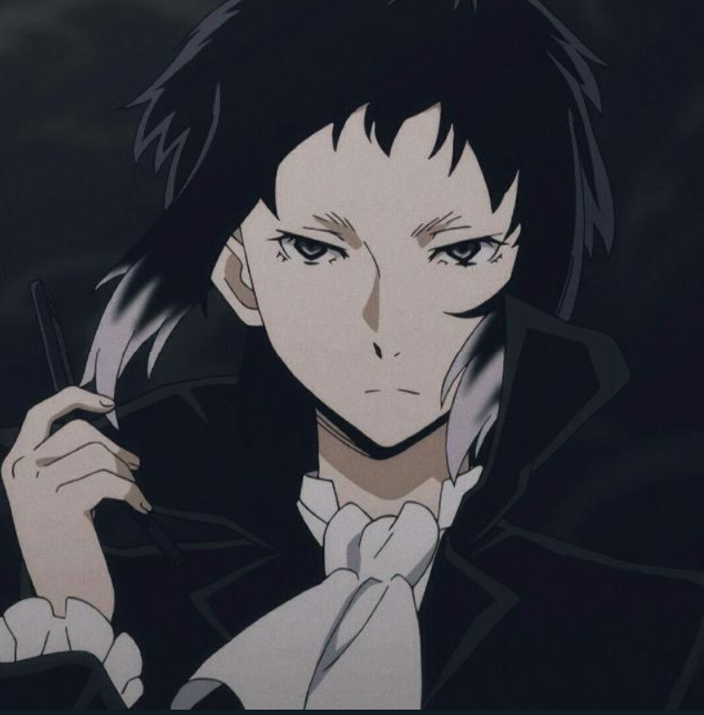

Daniel Ramirez
Fanático de los juegos retro y el creador de esta versión de Flappy Bird X con modos extremos y secretos ocultos.

Ramon Luna
Desarrollador visual y apasionado por el pixel art. Ayudó a rediseñar el mundo de Flappy Bird X.

Esteban Vazques
Encargado del diseño sonoro y la ambientación musical. Le dio vida a Flappy Bird X con ritmos que acompañan cada vuelo.